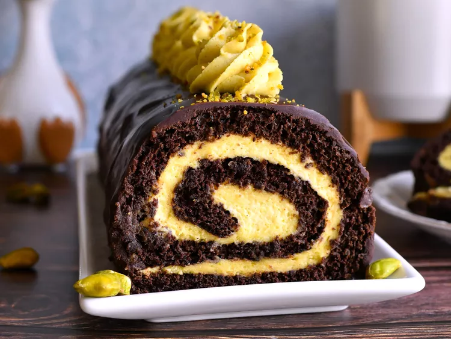

Home
Chocolate Pistachio Roll Cake

Kim, Chocolate Pistachio Roll Cake, June 1 2025, on
Allrecipes.com
Description
This chocolate pistachio roll cake is a showstopper of a cake that
tastes as good as it looks! It does take a bit of time to make, but
it's not particularly difficult. The cake keeps well after assembly, too. Just keep it covered and
stored in the refrigerator.
Ingredients
Cake
- ⅓ cup finely ground unsalted pistachios
- ⅓ cup Dutch-processed cocoa powder
- ¼ cup all-purpose flour
- 1 teaspoon instant espresso powder (optional)
- ½ teaspoon baking soda
- ½ teaspoon baking powder
- ½ teaspoon salt
- 4 large eggs, separated, at room temperature
- ¼ cup white sugar
- ⅛teaspoon cream of tartar
- ⅓ cup light brown sugar
- 2 tablespoons unsalted butter, melted and slightly cooled
- 2 tablespoons brewed black coffee, at room temperature
- 1teaspoon vanilla extract
- ½ teaspoon almond extract
- 2 tablespoons confectioner's sugar or cocoa powder, plus
more as needed
- 8 ounces cold mascarpone cheese
- 1 tablespoon cold pistachio cream
- ¼ cup confectioners sugar, or to taste
- 1 tablespoon tahini
- ¼ tablespoon salt
- ¼ teaspoon almond extract
- ¼ teaspoon vanilla extract
- ⅔ cup cold heavy cream
Ganache
- 4 ounces semisweet chocolate, chopped
- ½ cup heavy cream
- 1 tablespoon corn syrup
Steps
- Preheat the oven to 350 degrees F (180 degrees C). Grease a
rimmed 12x17-inch baking sheet and line the bottom with
parchment paper; grease the parchment
- In a medium bowl, sift together ground pistachios, 1/3 cup
cocoa powder, flour, espresso powder, baking soda, baking
powder, and salt. Set aside
- Combine egg whites and cream of tartar in a large bowl. Beat
with an electric mixer until soft peaks form. Gradually
drizzle in white sugar, 1 tablespoon at a time, until
incorporated. Keep beating mixture on medium-high speed
until stiff, glossy peaks form, 3 to 5 minutes. Set
aside
- In a second bowl, beat together egg yolks and brown sugar
until thickened, about 2 minutes. Mix in butter, coffee,
vanilla, and almond extracts until combined. Add in flour
mixture and beat on low speed just until incorporated. Fold
in about ⅓ of whipped egg whites until incorporated.
Fold in remaining egg whites just until no streaks of white
remain
- Pour batter into the prepared pan and smooth into an even
layer. Tap pan on the counter a few times to pop any large
air bubbles
- Bake in the preheated oven just until the cake springs back
when lightly touched, 10 to 12 minutes
- Meanwhile, lay out a piece of parchment or a kitchen towel
slightly larger than the cake pan. Generously dust the
parchment or towel with 2 tablespoons confectioner's sugar
or cocoa powder
- Run a knife around the edges of the pan to loosen cake.
Quickly and carefully invert cake onto the dusted parchment
paper or kitchen towel, and carefully peel of and discard
parchment from the bottom of the cake. Dust cake with a
little more powdered sugar or cocoa powder. Starting from
the shorter end, carefully roll cake up with the dusted
parchment or kitchen towel. Place cake, seam-side down, on
a wire cake to cool completely, about 1 hour
- For filling, add mascarpone, pistachio cream, powdered
sugar, tahini, salt, almond extract, and vanilla to a bowl
and beat with an electric mixer until smooth and combined.
Add in heavy cream and beat on medium-high speed until
mixture holds
- Carefully unroll cooled cake, and spread evenly with
filling. You can reserve a small amount of filling to pipe
on top of the cake just before serving (optional). Carefully
roll cake back up, without parchment or towel, over the
filling. Using a pastry brush, gently brush away excess
powdered sugar or cocoa powder from the outside of the cake.
Place cake onto a plate or platter and refrigerate for at
least 1 hour
- For ganache, place chocolate, heavy cream, and corn syrup into
a microwave-safe bowl. Heat in 30 second intervals, stirring
after each, until chocolate is melted, and becomes smooth and
combined, 1 to 2 minutes.
- Remove cake from the refrigerator. Pour ganache over the cake.
If desired, spoon any drippings back over cake and use an
offset spatula or butterknife to help coat the cake fully.
Refrigerate cake until ganache is set, about 30 minutes.
- To serve the cake, carefully slice any uneven ends off to
expose the spiral. If desired, pipe reserved filling over
the top of the cake and garnish with a sprinkle of chopped
pistachios. Store cake in the refrigerator.